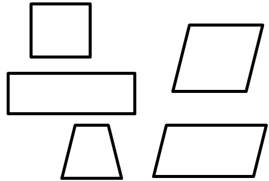
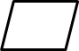
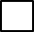
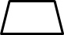
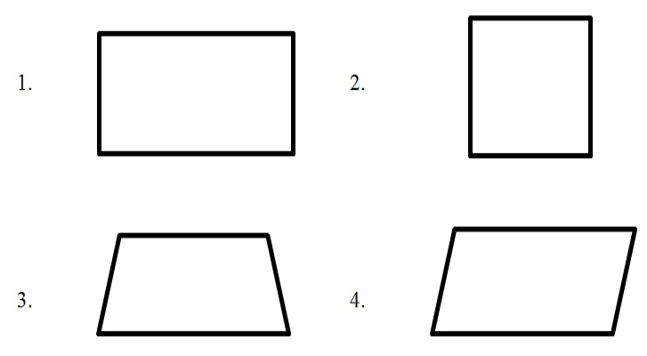

EXPLORE
Look at the different quadrilaterals.
What are the different kinds of quadrilaterals ?
A quadrilateral is a polygon with 4 sides and 4 angles. The following are different quadrilaterals:
A parallelogram has 2 pairs of parallel sides and its opposite sides are equal.
A rhombus is a parallelogram that has 4 equal sides
A rectangle is a parallelogram that has 4 right angles. Its opposite sides are equal.
A square is a parallelogram that has 4 equal sides and 4 right angles.
A trapezoid has only one pair of opposite sides that are parallel.
Get Moving
Identify the following quadrilaterals:
